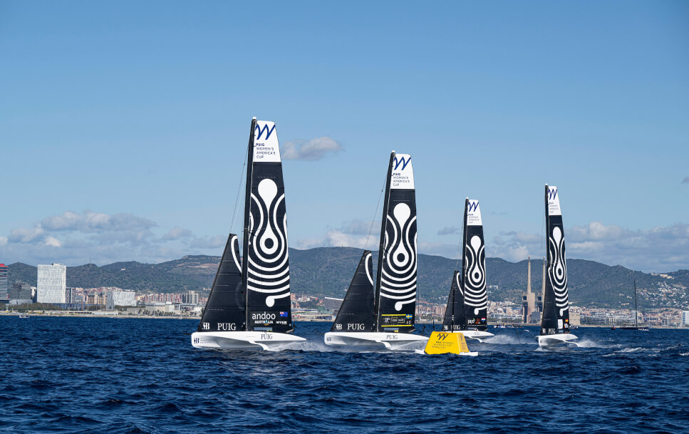

Llevan años peleando para hacerse hueco en la vela, una disciplina tradicionalmente gestionada y competida por hombres. La Puig Women's America's Cup llega a Barcelona para cambiar la historia
Creyeron que las mujeres no serían capaces de navegar solas. Se equivocaban. Aun así, han tenido que pasar décadas desde la creación de la America’s Cup para que se incorporara dentro de su programa una regata donde las mujeres tuvieran todo el protagonismo. Sin pedir permiso, ni tener que dar las gracias por un pequeño espacio en el barco. Ahora ellas toman el timón de la mano de Puig, patrocinador global de la competición y naming partner de la prueba. Estas son sus historias.
No veo por qué no tienen que dejarme navegar por el hecho de ser mujer. Ha llegado el momento de que las mujeres disfruten de la vela
A mediados de los 80 la única forma de participar en una regata siendo mujer era como cocinera. La británica Tracy Edwards no se lo pensó dos veces: se enroló en la Whitbread Round the World Race 1985-86 para manejar los fogones. No era desde luego su vocación, pero sí una oportunidad para confirmar su vena navegante. En 1989 daría de nuevo la vuelta al mundo, pero esta vez, capitaneando su propia embarcación, el Maiden. Hipotecó su casa para pagarlo y convenció a otras doce tripulantes mujeres para acompañarla en aquel reto. 32.000 millas después se convertían en la primera tripulación 100% femenina en dar la vuelta al mundo.
No fue un camino de rosas, tuvieron que aguantar mofas de los escépticos que no creían que las mujeres estuvieran capacitadas para hacerse a la mar. Al menos, no al nivel competitivo de los hombres. “No veo por qué no tienen que dejarme navegar por el hecho de ser mujer. Ha llegado el momento de que las mujeres disfruten de la vela”, fue su frase lapidaria.
De las seis etapas de la competición, ganaron dos. Y demostraron al mundo que las chicas también pueden ser excelentes navegantes.
Han sido necesarios 173 años para que las mujeres tuvieran un papel protagonista en la America’s Cup. No es que antes no tuvieran presencia, pero era minoritaria, aislada y no constante. Nadie creía que pudieran soportar la dureza de una prueba marítima donde el mar impone sus reglas. Este 2024 marca un antes y un después con la primera regata femenina de la historia de la America’s Cup, la Puig Women’s America’s Cup. Se incluye dentro del calendario de la 37ª Edición y tendrá lugar en Barcelona del 5 al 13 de octubre.
Además de las más de 70 regatistas participantes, la prueba cuenta con varias mujeres en puestos directivos y de organización. Así lo destaca la británica Abby Ehler, veterana regatista oceánica y coordinadora del evento: “Es la iniciativa más emocionante que he visto durante mi carrera respecto a la participación de la mujer en el mundo de la vela. Va a dar impulso a las regatistas que aspiran a llegar a la élite y apoyará a las que desempeñan funciones técnicas en tierra”.
El idilio de Natalia Vía-Dufresne con la vela surgió durante un cursillo de verano cuando solo tenía 8 años. Ha pasado por cuatro Juegos Olímpicos, con dos medallas de plata (Barcelona 92 y Atenas 2004). Pero su palmarés a lo largo de 30 años en la élite acumula un Campeonato de Europa, unos Juegos del Mediterráneo y una Copa del Rey, entre otros muchos podios. Y eso que su llegada a la más alta competición fue fruto de la casualidad. “Tenía 19 años y coincidió que para Barcelona 92 se incluyó por primera vez la clase de Europa, que era en la que yo navegaba”, recuerda de aquella experiencia.
En la actualidad, sigue vinculada a las regatas como coach y gestora de equipos deportivos. Es la coordinadora de Operaciones en el Agua de la Puig Women’s America’s Cup. “Que esta compañía apoye esta regata significa que tiene una gran sensibilidad por la igualdad de género”, concluye.
Las participantes navegan en la nueva clase AC40. Son naves muy ligeras, auténticas ‘balas’ de 12 metros que parecen volar sobre el mar. Aun así, la vida de una regatista no está hecha para delicadezas. “Es un estilo de vida duro. No tienes una base constante, viajas por todo el mundo allá donde hay una regata y tienes que aprender a manejarte con vientos y mares muy distintos”, señala Laia Tutzó, directora de Desarrollo de Negocio e Innovación de la Real Federación de Vela.
La canaria María Cantero lleva media vida bregando contra el sol, las olas y el salitre. Nacida en el seno de una familia apasionada por la vela, debutó con un bronce en la Copa Mundial Juvenil 49erFX en 2013. Desde entonces, ha pasado por distintas categorías y llegó a formar parte del equipo que quedó tercero en el evento inaugural en Gaeta en 2021 para el Royal Hong Kong YC Team Agiplast. “El AC40 hace innecesaria la fuerza, porque todo va con botones hidráulicos. Eso nos permite superar el hándicap que solíamos tener las mujeres”, explica.
Estos días en Barcelona competirá como trimmer en el Sail Team BCN, el único equipo español en la regata.
La italo-suiza Alexandra Stalder, del Alinghi Red Bull Racing, sabe lo que es desear navegar y no poder. A los cuatro años se quedaba en dique seco observando a sus hermanos porque ella aún era demasiado pequeña para embarcar en el Optimist. En cuanto la dejaron, demostró que había nacido para navegar. Tenía 8 años cuando se inició en la vela y ha pasado por el 420 y el Optimist, antes de ganar el Campeonato Mundial U23 en un 49erFX. Ahora le toca el turno al AC40. “Podemos demostrar que somos los suficientemente fuertes”, señala con contundencia.
En las fotos promocionales siempre luce el sol. En la vida real, las cosas suelen torcerse. “La vela es un deporte duro. Muchos días hace frío, llueve, estás sola y te encuentras un tiburón. Pero esa dureza es lo que te empuja a decir ‘mañana, más”, confiesa la timonel del Sail Team BCN. Lleva compitiendo desde los 8 años y encadenando múltiples podios. Los Juegos Olímpicos de Tokio, sin embargo, le mostraron sus fauces y quedó en un discreto puesto 11º. “Aprendí que esto es cuestión de esfuerzo constante”, rememora.
Describe la Puig Women’s America’s Cup como “velocidad, choques, adrenalina e innovación”. Pero, sobre todo, como un sueño hecho realidad. “De niña lo veía imposible porque era una cosa de hombres. Pero ahora ya no es imposible. A las niñas les diría que hagan lo que quieran. El techo ya no existe”.
Los días duros, no te rindes.
Terminas y dices ‘mañana, más’
Durante décadas, la presencia femenina en esta regata llegaba a cuentagotas. Y no por falta de pasión entre las féminas Gemma Jones, del Emirates Team, vivió su primera America’s Cup con tan solo un año. “Estábamos en San Diego y mis padres navegaban. Así que podría decir que fue mi primera vez”, confiesa la neozelandesa, que ocupa las posiciones de trimmer y timonel de respaldo. Quedó cuarta en Rio 2016 junto a su compañero Jason Saunders en la recién estrenada categoría mixta hombre-mujer Nacra 17.
En esta ocasión, ha decidido probar la experiencia de incorporarse a una tripulación compuesta exclusivamente por mujeres. “En una regata normal, si tienes suerte puede que encuentres algún hueco en una embarcación. Aquí al ser una competición exclusivamente femenina, todas las funciones las cubrimos las chicas”, señala.
Penny Clark, ingeniera y entrenadora del Athena Pathway, recuerda que en su primera foto sobre un barco está aún en pañales. “Pero ya llevaba una cuerda en la mano”, señala dando a entender que desde muy niña estaba predestinada a llevar el timón. Participó en los Juegos de Pekin 2008, donde logró un cuarto puesto para Gran Bretaña, y desde entonces ha visto cómo las mujeres reclamaban más presencia en el deporte de la vela. “Siempre ha habido mujeres en las tripulaciones, pero ahora por fin las mujeres tienen todo el protagonismo”, declara.
Oliva ‘Lic’ McKay empezó a los siete años al ver a su hermano en una embarcación. Si él podía hacerlo, ella, también. Cuando se quedó fuera de la convocatoria de Nueva Zelanda para los Juegos de Tokio en la categoría Nacra 17, decidió que era hora de probar algo totalmente nuevo: integrarse en una tripulación completamente femenina. “Las mujeres no lo han tenido fácil en la vela. Esta oportunidad va a cambiar el destino de las generaciones futuras y confío en que animará a las chicas jóvenes a amar esta disciplina deportiva”, afirma.